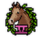
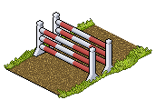
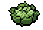
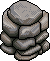
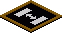

Interessantes aus Habbo
Reiter und Springreiter
Im Folgenden wird gezeigt wie man mit seinem Haustier (Pferd) ein AFK-Level bauen kann, um im Bonussystem bei Reiter und Springreiter weiter zu kommen.

Springreiter Level V Für 6000 Sprünge mit deinem Pferd.
Benötigte Möbel:

Pferdesprung (Wassersprung geht genauso)

Gemüse

5 x Eckstein (oder vergleichbare Möbel)

Magic-Stapelfeld (egal in welcher Größe)
Grundprinzip: Das Haustier wird vom Gemüse angelockt und bleibt so in der Mitte des Sprungs. Der Eckstein dient dann dazu, dass das Gemüse einigermaßen abgedeckt ist aber vor allem damit das Haustier nicht auf das Gemüse direkt drauf kann und es auffrisst. Das Stapelfeld dient dazu das Gemüse im Sprung hineinzubekommen und auf einer bestimmten Höhe zu stapeln und die Ecksteine teilweise um den Sprung zu legen.
Das Gemüse wird zuerst rechts oder links der Mitte hineingestapelt auf der Höhe von 0.5 damit das Pferd das Gemüse wahrnimmt und in die Mitte des Sprungs hineingehen kann.
Dann wird das Stapelfeld hinausgenommen. Links und rechts wird dann jeweils das Stapelfeld angebracht auf der Höhe 0 und dort wird auf beiden Seiten ein Eckstein abgelegt. In der Richtung vom Gemüse werden dann 3 weitere Ecksteine angebracht. Das Bild zeigt den Aufbau.
Am Ende nimmt man wieder das Stapelfeld raus und geht mit seinem Pferd ein paar mal hin und her bis es hunger bekommt und das Gemüse essen will. Dann wird es von dem Gemüse angelockt und bleibt in der Mitte wie man hier sehen kann:
So schnell hat man sein eigenes AFK-lvl gebaut.
Fakten, die man wissen sollte
- Alle 10 Min fällt man bei diesem Bug vom Pferd und muss wieder neu rein, um weiter zu leveln
- Einen erfolgreichen Sprung erkennt man daran, dass der Sprung-Möbel glitzert
- Bricht der Balken in der Mitte des Sprung-Möbels zusammen war der Sprung kein erfolg
- "Springreiter" levelt pro Sprung unabhängig davon ob dieser erfolgreich war oder nicht
- "Reiter" levelt nur, wenn die Sprünge erfolgreich waren
- Die Wahrscheinlichkeit, dass du einen erfolgreichen Sprung erreichst wird höher, wenn das Pferd einen hohen Sprunglevel hat
- Erreicht das Pferd ein höheres Tierlevel wird er gleichzeitig auch sein Sprunglevel verbessern
- Ist der 1. Sprung erfolgreich werden alle weiteren Sprünge während man sich im Bug befindet (d. h. mit dem Pferd im Sprung-Möbel schräg in der Mitte) auch erfolgreich. Das gleiche gilt, wenn der 1. Sprung kein erfolg war, dann werden alle weiteren Sprünge auch nicht erfolgreich sein